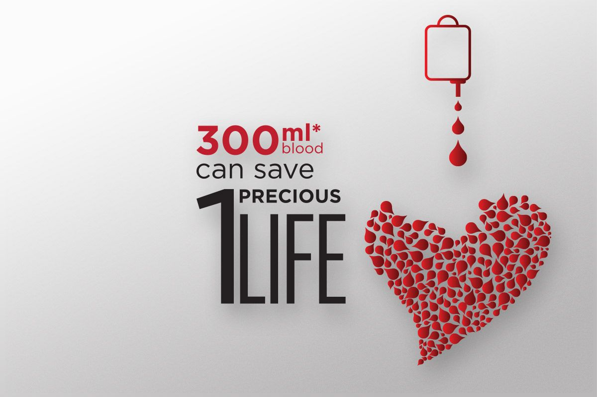

The Benefits of Donating Blood
Donating blood has benefits for your emotional and physical health. According to a report by the Mental Health Foundation, helping others can:
Research has found further evidence of the health benefits that come specifically from donating blood.
In order to give blood, you’re required to undergo a health screening. A trained staff member performs this checkup. They’ll check your:
Your blood is also tested for several diseases. These include: